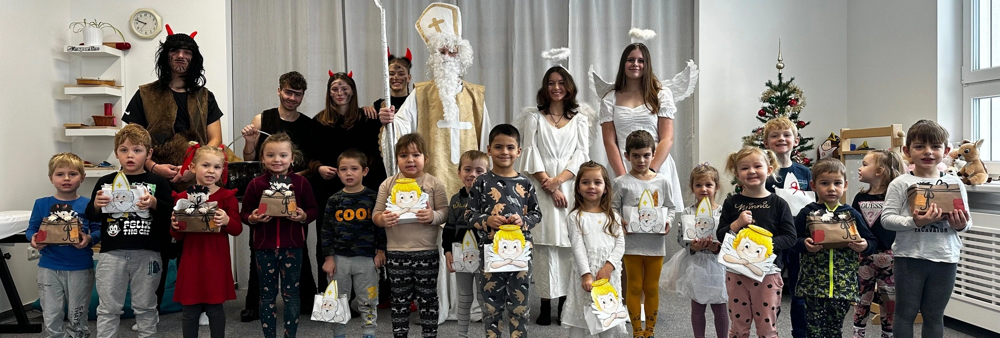
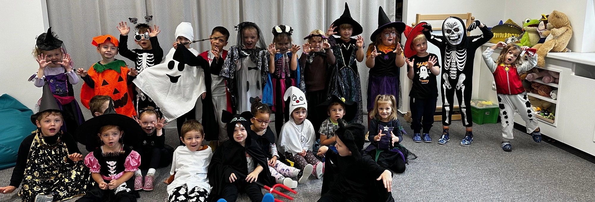
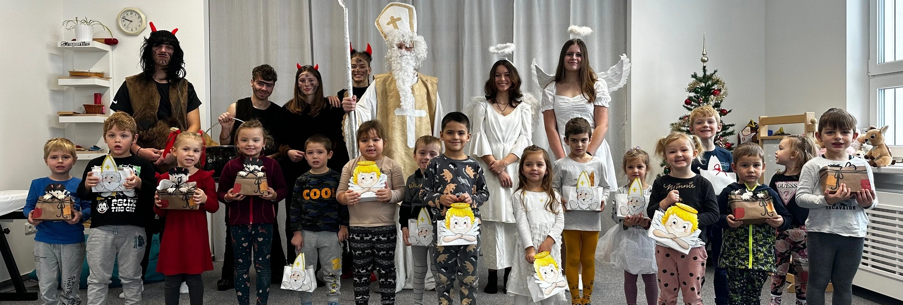
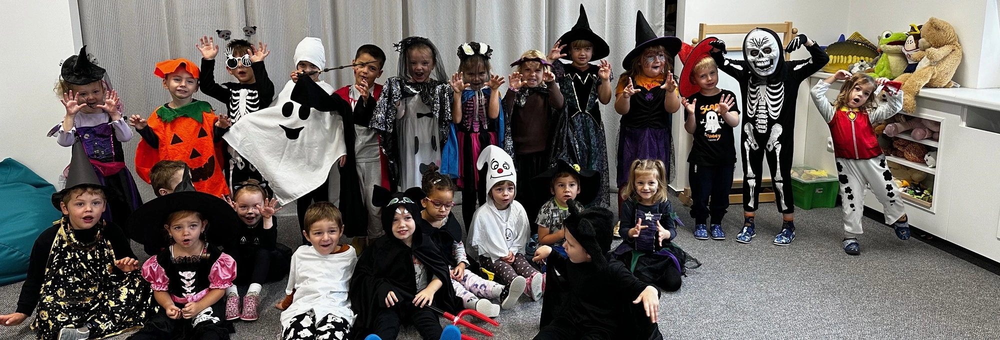

Obecná charakteristika školy
Mateřská škola v Kostomlatech nad Labem (dále jen MŠ) je státní předškolní zařízení zřizované obcí Kostomlaty nad Labem a je zde jediným předškolním zařízením svého druhu. V současné době má čtyři třídy. Od 1.9. 2023 je mateřská škola zapsána v Rejstříku škol s povolenou maximální kapacitou 100 dětí a maximálně povolenou kapacitou školní výdejny 120 strávníků.
Mateřská škola se nachází uprostřed obce v přízemní čtyř pavilónové budově, která přiléhá k zahradě MŠ. Každý pavilón má svůj vlastní vchod, šatnu pro děti a zaměstnance, sociální zařízení pro děti a zaměstnance, úklidovou místnost, výdejnu stravy a prostornou třídu, která je rozdělena na dvě části. Škola dále disponuje samostatnou ředitelnou, kabinetem pomůcek, venkovními toaletami a skladem hraček. Třídy jsou vybaveny nábytkem a zařízením, hračkami a didaktickým materiálem a pomůckami, který odpovídá předškolnímu věku dětí. První pavilon byl v srpnu roku 2020 zkolaudován, splňuje podmínky předškolního vzdělávání pro věk od dvou let výše.
Ke škole náleží prostorná zahrada s dostatkem zeleně včetně vzrostlých stromů a travnaté plochy. Na zahradě jsou umístěny herní prvky, které splňují požadované normy pro předškolní věk dětí. Prostornost jednotlivých tříd a zahrady lze považovat za přednost MŠ, jelikož umožňuje dostatečný volný a přirozený pohyb dětí.
Věcné podmínky
MŠ má vyhovující prostory k výchovně-vzdělávací práci pro předškolní pedagogiku. Třídy jsou světlé, na oknech jsou žaluzie, podlaha je pokryta PVC, koberci, dlažbou. Veškeré prostory jsou vybaveny vhodným nábytkem, herními prvky, didaktickým materiálem a pomůckami, sanitou vzhledem k požadavkům na bezpečnost, hygienické a estetické požadavky a vzrůst dětí jednotlivých tříd.
Každá třída má k dispozici dvě prostorné herny. Jedna herna slouží částečně také jako jídelna a druhá herna slouží jako tělocvična a po rozložení lehátek rovněž jako ložnice.
Prostorové uspořádání vyhovuje nejrůznějším skupinovým i individuálním činnostem dětí, formám a metodám práce (Montessori pedagogika, Začít spolu). Třídy pohledově rozděleny nábytkem do center aktivit tak, aby děti podněcovaly ke hře a samostatné práci. Tato centra jsou označena dle svého zaměření piktogramem a doplněna pestrou škálou tematických pomůcek. Děti tak mají možnost samostatného výběru činností v jednotlivých centrech aktivit. Oddělené prostory poskytují dětem dostatek nejen dostatek soukromí a klidu, nabízení možnost práce metodou Montessori.
Nábytek tříd je uspořádán tak, aby děti mohly pracovat nejen jednotlivě, ale také spolu mohly kooperovat v různě velkých heterogenních skupinách.
Každá třída disponuje kvalitními a bezpečnými hračkami, stavebnicemi, knížkami, didaktickými i tělovýchovnými pomůckami a nářadím (lavičky) dále také materiálem pro tvořivou práci a realizaci individuálních zájmů. Rozmístění hraček a pomůckového materiálu je promyšlené a účelné tzn. děti mají možnost co nejvyšší míry samostatnosti při výběru, využívání a ukládání pomůcek.
Odpočinek dětí probíhá v herně, která je vybavena kobercem. Děti odpočívají na dětských matracích, které stejně jako přikrývky, polštáře a ložní prádlo odpovídají hygienickým požadavkům, tzn. každé dítě má svou matraci, polštář, přikrývku a lůžkoviny v oddělené přihrádce opatřené vlastní značkou na místě k tomu určeném.
Interiér budovy je vkusně vyzdoben. Stěny v šatnách slouží jako výstavní plochy dětských výtvorů. V šatnách jsou také umístěny nástěnky pro rodiče potřebnými informacemi. MŠ vlastní pedagogickou a dětskou knihovnu, které jsou k dispozici dětem, pedagogům. Pro rozvoj informační a komunikační technologie je MŠ vybavena čtyřmi notebooky pro pedagogy, třemi tablety, čtyřmi mobilními telefony a interaktivní tabulí v Zelené třídě.
Zahrada MŠ je opatřena těmito herními prvky: čtyřmi pískovišti, skluzavkou, lanovými prolézačkami, dřevěnou prolézačkou se skluzavkou, lanovou pyramidou, dvěma dřevěnými kladinami, senzorickým chodníkem, prolézačkou „Hrad“, pružinovými houpadly a pákovou houpačkou. Pískoviště jsou přikryta sítěmi proti znečištění. Zahrada dětem nabízí možnost volného pohybu a her.